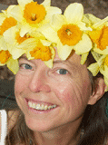
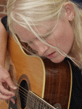
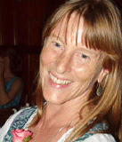
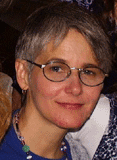
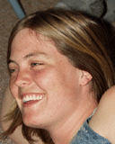
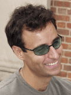
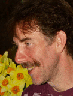
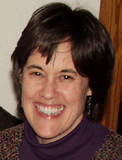

Cynthia Rylander Crossen
Cynthia has performed her original songs since the mid-1970's in various venues from coffeehouses
to concert halls, environmental festivals to multiracial celebrations. She sings for compassion,
community, and connection, the sacredness of our earth, kindness to each other, the recognition
of women's voices. This spring, with help from family and friends, she created the CD
Feel This Love, which is being distributed free as part of the Community Music Project.

dandelion john
A singer/songwriter originally from Pittsburgh, PA, dandelion john got his start playing
blues guitar in rock clubs around his hometown. For years he played in bands and lived on
the road working the club scene in places like Cleveland, Philadelphia, Washington DC,
the Jersey shore, and New York City. In 1991 he engineered and co-produced legendary
Pittsburgh rocker Norman Nardini's comeback album, This Old Train.
This Old Train yielded 2 top ten singles in Germany and, along with his fellow band mates,
he toured Germany for 3 weeks as an opening act for the Blues Brothers.
Dandelion stopped performing live in the fall of 1992 to concentrate on his own brand
of folk music which is rooted in his unique counter culture perspective of living closer
to the land. In the spring of 2000 he walked the Appalachian Trail from Georgia to Maine.
This experience was captured in songs he wrote along the way and led to the recording of a
demo album in 2001 entitled A Mile In My Shoes. He is currently working on his next release,
as well as helping to contribute to the Community Music Project.
Jamuna (Джемма Халид "Djemma Khalid")
Russian folk singer Jamuna grew up in Moscow, attending six years of music school
(accordion and piano), five years at Moscow Musical College #2 (earning a degree as a
conductor and music teacher), and three years at Moscow's prestigious Gnesinij College of Music.
The political turmoil of eastern Europe derailed her music studies when she won a
Polish-government-sponsored Polish song competition. Due to her political views,
the Soviet government initially denied her a passport to accept her prize,
but under pressure from the Polish cultural authorities, finally allowed her to travel to Poland.
From 1989 to 1994, she toured extensively in Poland and Germany with a group of Polish artists,
singing for the Solidarity movement, learning to speak, read, write, and most importantly,
sing in Polish.
In 1991, she was singing in Moscow subway stations, earning quite a lot more than a typical
factory or office job would have paid. With thousands of other Russians, she went to the
Russian "White House" to protect Boris Yeltsin when the communist party in the Soviet
parliament revolted against the glastnost policies introduced by Gorbachev.
Jamuna's performances weave a rich tapestry of traditional, gypsy, and Soviet-era folk songs,
set in their historical and cultural context by Jamuna's charming commentary.
Much of the commentary is drawn from her own experiences as a witness to,
and occasional participant in, recent Soviet history. Her performances
offer a unique and very personal insight into Russia's history.
She produced a CD, "Goodbye Taganka", in America in 2000, based on her recordings made in
Moscow for the CD, "Podzemniy Perehod", released in Russia. "Goodbye Taganka" includes pop versions
of "Papirosy" and "Taganka", a Russian prison song.
The Community Music Project co-produced this CD.
Check out Jamuna's web site

Maia Derewicz
Maia Derewicz, a singer/songwriter from North Carolina, draws her inspiration from her various
travels around the world and the Bah�'� Faith, a world religion based on the premise of the
oneness of humanity. Maia is also inspired by the power of faith, the search for truth and
her belief in divine guidance to foster spiritual growth. She feels blessed to have the gift
of music, which she considers to be the ladder to the soul. Maia, a UNC Asheville graduate,
is currently traveling the country with her husband Mark, making a short stop in Chapel Hill
to visit friends and family. Wherever life takes her, Maia hopes to keep music a part of her
journey and spirituality a part of her music.

Carol Verner
Dede Banks

John McSween
Laine Lipson

Laurie Lindgren

Lea Clayton
Lea Clayton is an organic grower, educator, and landscape gardener.
She loves to sing, play banjo, and crew on the Haw River Festival.

Mark Derewicz

Mark Smith
Singer/songwriter
and leader of
community singing/chanting
.
Nina Elshiekh
Sarbaga Falk
Sarbaga Falk and Cynthia have been singing together for over twenty years;
they lead singing workshops together. Sarbaga teaches meditation and follows
the spiritual path of Sri Chinmoy.

Sue Wilson
Val Rosado